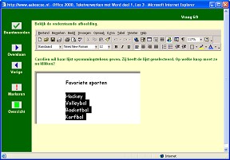
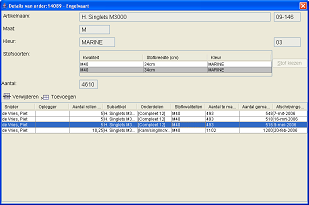
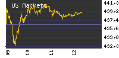
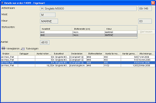
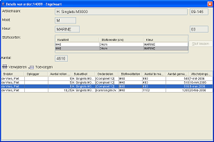

Dit is een greep uit de activiteiten die ik in de loop der jaren heb uitgevoerd. Naast deze commerciële projecten heb ik ook vele projecten op vrijwiligersbasis gedaan.
Instruct: Verschillende projecten op gebied van E-Learning:

Engelvaart: 
Infi
ISK-Research:
US-Markets:

 
